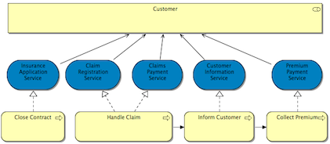
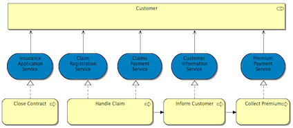

Show Elements first (Use the Ctrl/Command key to swap)
从魔术连接器单击空的视图画布时，弹出菜单中的“元素”先显示“元素” ，然后显示“连接”。同时按住Ctrl/Command键将反转此操作。
Show Connections first (Use the Ctrl/Command key to swap)
When clicking from the Magic Connector onto the empty View canvas show Connections first then Elements in the popup menus. Holding the Ctrl/Command key at the same time will reverse this.
Use anti-aliasing on connections
On Windows and Linux operating systems ensures that connections are drawn more smoothly.
使用正交连接锚点
If this is ticked then a new method to calculate the anchor point for a connection is used (the position where a connection connects to a figure). By default (option not ticked), the anchor point is computed as the intersection of the figure's border and the connection targeting the figure's centre. With this option, the anchor point is computed to make the connection either a vertical or horizontal line (if this not possible, it connects to one of the figure's corners).只需移动图形或在连接中创建弯曲点并移动即可移动此锚点。
For example if not ticked (default) the connections appear as follows:

If ticked the connections appear as follows:

使用线条曲线
If this is enabled, connections are shown with curves at bend points.
Use line jumps for intersecting connections
如果启用此选项，则当一个连接与另一个连接相交时，将显示跳跃曲线。
Highlight selected connection
If this is enabled, the selected connection is highlighted to make it easier to see.
标签背景
Sets the strategy for drawing connection label backgrounds. This can be one of "Transparent", "Opaque" or "Clipped".
Show a warning message when a re-connection affects other Views
在视图中的ArchiMate元素之间进行重新连接时，这些元素和连接可能存在于一个或多个其他视图中。重新连接将影响这些视图，此警告会提醒用户注意这一点，操作可以撤消。
For more information see Container Elements and Nested Element Relationships.
在视图中为嵌套元素启用隐式连接
If this is enabled then nested parent/child elements are considered to have an implicit connection in a View representing a relationship between the elements in the model.
Offer to create new relation when creating new element from Palette
如果启用了此功能，则当将新元素从调色板添加到视图中的父元素时，将出现一个对话框，用于在父元素和子元素之间创建新关系。
Offer to create new relation when adding element from Model Tree
If this is enabled then when a new element is added from the Model Tree onto a parent element in the View a dialog appears offering to create a new relationship between the parent and child elements if one does not already exist.
提供在将元素移动到新的父元素时创建新关系
If this is enabled then when an element in a View is dragged onto a parent element in the View a dialog appears offering to create a new relationship between the parent and child elements if one does not already exist.
Relation types offered when creating new relations
选择在视图中的父元素和子元素之间创建新的隐式连接时将提供的关系类型。
Reverse relation types offered when creating new relations
Select the types of relationship that will be offered when new implicit connections are created between child and parent elements in a View. These are "reversed" nestings.
元素嵌套时隐藏的关系类型
Select the types of relationship connection that will be hidden in a View when there are nested parent and child elements. Non-ArchiMate connections are hidden by default when a connected object is nested.